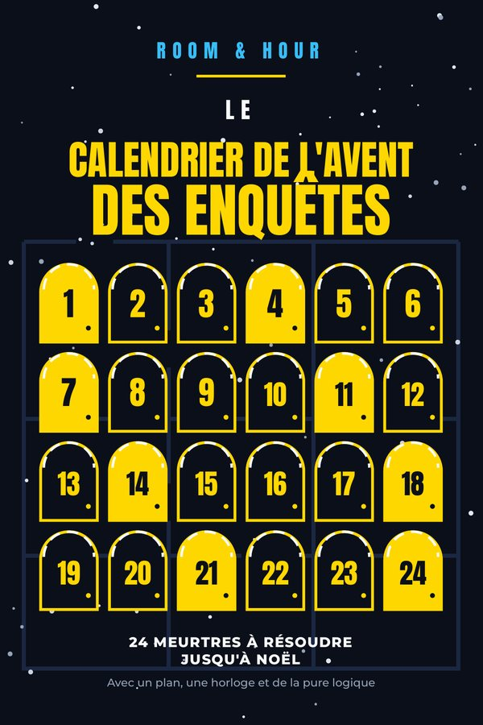
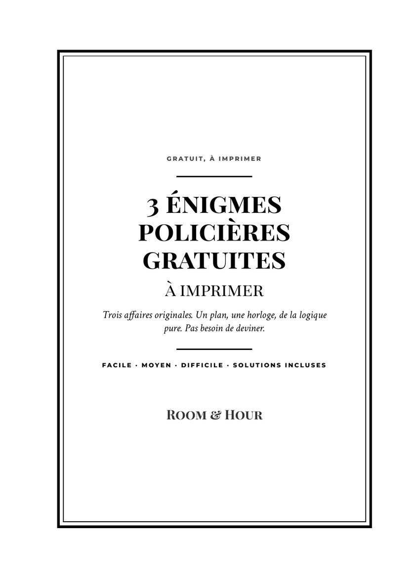

Room & Hour: Le Calendrier de l'Avent des Enquêtes
24 meurtres à résoudre jusqu'à Noël : énigmes de logique pour adultes avec plan, horloge et solutions.
Bientôt sur AmazonÉnigmes policières de logique
Chaque affaire Room & Hour vous donne un plan, un emploi du temps et une liste de suspects. Chacune a une seule solution, que l'on trouve par déduction. Pas de hasard, pas de question piège.

Sans inscription, sans rien installer. Commencez par une affaire facile et montez en difficulté.
Imprimés, à résoudre au crayon. Chaque livre est original et chaque affaire a été vérifiée par logiciel : une seule solution.

24 meurtres à résoudre jusqu'à Noël : énigmes de logique pour adultes avec plan, horloge et solutions.
Bientôt sur Amazon